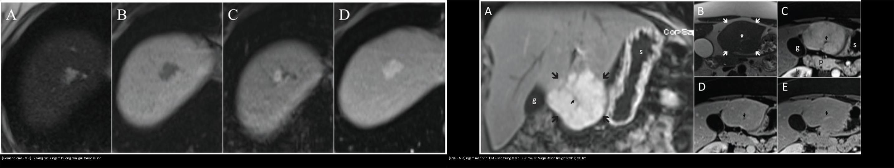
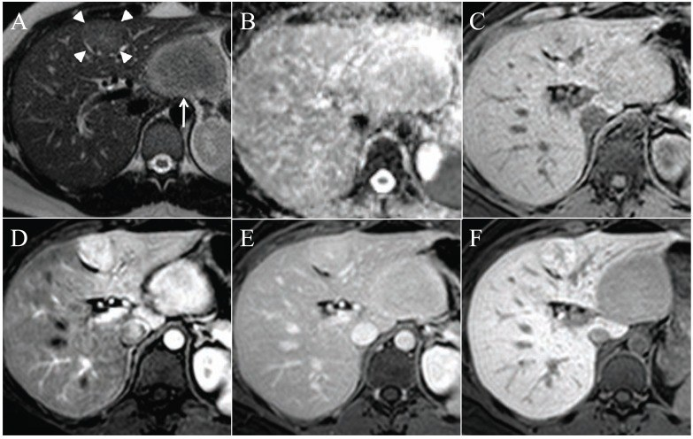
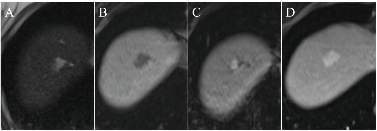
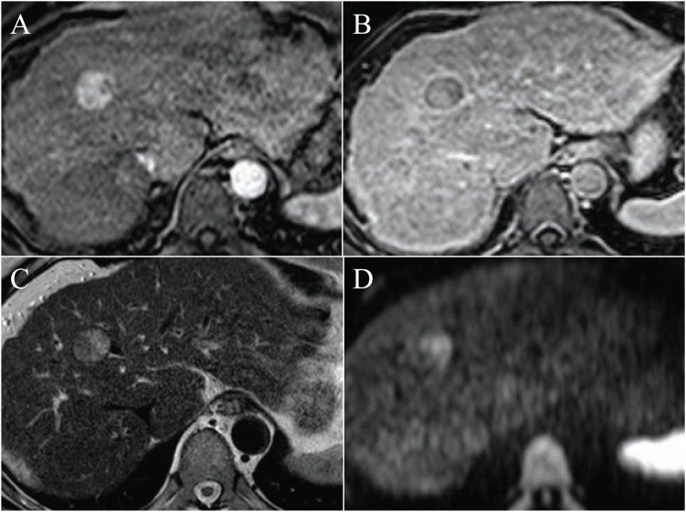

120 — Khối gan nền lành vs xơ: động học bắt thuốc & u lành hay gặp / Focal liver lesions
Tags: pattern:khoi-gan vung:gan protocol:MRI-gan-Primovist score:LI-RADS
Mức chắc chắn (certainty): tổng hợp y văn (literature synthesis) — tự biên từ y văn mở (Albiin 2012 CC BY; Kaltenbach 2016 CC BY), chưa gắn ca nguyên văn đơn lẻ.
1. Tổng quan — nền gan quyết định "xác suất trước kiểm", động học quyết định tên gọi
- Nền xơ/viêm gan B–C (cirrhosis): nốt mới = HCC đến khi chứng minh ngược lại (áp dụng LI-RADS — bài 121). Nền lành: ác tính hiếm — chủ yếu u lành + nang + áp-xe (trừ khi có ung thư nguyên phát nơi khác → di căn).
- Tần suất u lành gặp tình cờ (siêu âm 45.319 BN — Kaltenbach 2016, CC BY): có ≥ 1 tổn thương 15,1%; hay gặp nhất là mỡ chừa khu trú (focal fatty sparing) 6,3%, nang đơn thuần 5,8%, hemangioma 3,3%; còn FNH 0,2% và adenoma 0,04% — nghĩa là FNH/adenoma hiếm khi tình cờ.
- TẠI SAO cùng một nốt lại khác kết luận theo nền: nốt ngấm mạnh thì động mạch (arterial hyperenhancement) ở gan xơ = LR-4/5 (HCC); ở gan lành + nữ trẻ + chảy máu = adenoma. Bối cảnh nền đổi hẳn giá trị tiên đoán của một dấu hiệu.
- Vật lý cốt lõi — học thuyết động học bắt thuốc (enhancement kinetics): gan cấp máu kép (~75% tĩnh mạch cửa, ~25% động mạch gan). U ác/HCC lấy máu động mạch nên ngấm sớm thì ĐM (APHE) rồi thải (washout) thì cửa/muộn; u lành giữ mô gan hoặc ngấm theo bể máu (hemangioma). Trên MRI, thêm T2 (nước tự do/nang/hemangioma sáng rực) và khuếch tán (DWI/ADC) (tế bào đặc → tối DWI) để định hướng.
2. Gamut theo nền + động học + tín hiệu (Gamut)
- Nền xơ + APHE + washout (± vỏ bao, tăng LDH/AFP): HCC (LR-5) hoặc di căn; cholangiocarcinoma trong gan (T2 sáng, đường mật giãn quanh).
- Nền lành + T2 sáng rực + ngấm nốt ngoại vi hướng tâm: hemangioma (u lành hay gặp nhất sau nang/mỡ chừa).
- Nền lành + sẹo trung tâm T2 sáng + ngấm mạnh thì ĐM rồi đồng tín hiệu + GIỮ thuốc thì gan–mật: FNH (nữ trẻ, không vỡ, không ung thư hóa).
- Nền lành + nữ trẻ + thuốc tránh thai + mỡ trong u/tăng tín hiệu T1 + chảy máu: adenoma (nguy cơ vỡ; ngừng thuốc, cân nhắc mổ khi lớn).
- Nang/bờ tròn nước + đuôi tăng âm trên siêu âm, không ngấm: nang gan đơn thuần (theo dõi).
- Sốt + viền ngấm + "bia bắn đôi" ± khí trong u: áp-xe gan (Klebsiella + đái tháo đường).
3. Bảng so sánh phân biệt (ma trận đối chiếu)
| Thực thể (entity) | Hình ảnh điển hình (US/CT/MRI theo thì) | Chốt vào (rule-in) | Chốt loại (rule-out) | Gợi ý xác nhận |
|---|---|---|---|---|
| Hemangioma | T2 sáng rực "bóng đèn", T1 tối; ngấm nốt ngoại vi hướng tâm, đầy dần thì muộn | T2 rất sáng + ngấm hướng tâm + giữ thuốc muộn | Ngấm nhanh–thải sớm → nghĩ HCC/di căn | MRI (± CEUS); theo dõi, mổ khi khổng lồ > 5 cm có triệu chứng |
| FNH | T2 hơi sáng, sẹo trung tâm T2 sáng; ngấm mạnh thì ĐM → đồng tín hiệu, GIỮ Primovist thì gan–mật | Sẹo trung tâm + giữ thuốc gan–mật | Thải thuốc/washout → loại FNH | MRI Gd-EOB-DTPA (Primovist); không sinh thiết vô ích |
| Adenoma | T1 mỡ (mất tín hiệu out-of-phase) ± chảy máu; ngấm thì ĐM, KHÔNG giữ thuốc gan–mật | Mỡ + chảy máu + nữ trẻ/thuốc tránh thai | Giữ thuốc gan–mật → FNH | MRI; ngừng thuốc tránh thai; mổ khi ≥ 5 cm/vỡ |
| HCC | Nền xơ; APHE + washout ± vỏ bao, T2 hơi sáng, hạn chế khuếch tán | LI-RADS LR-5 (bài 121) | Không nền xơ + ngấm hướng tâm → hemangioma | CT/MRI đa thì; LR-5 đủ để điều trị, không cần sinh thiết |
| Di căn gan | Thường giảm mạch, viền ngấm thì cửa, hạn chế khuếch tán rõ, hình "bia" | Nhiều ổ + K nguyên phát + DWI sáng | Đơn độc + T2 rất sáng → hemangioma/nang | CT/MRI + PET; tìm nguồn (đại tràng, NET, thận) |
| Nang gan đơn thuần | Đồng tín hiệu nước (T2 rất sáng, không ngấm), bờ trơn | Không ngấm mọi thì | Có thành/ngấm → nang phức tạp/áp-xe | Siêu âm/MRI; theo dõi |
| Áp-xe gan | Đông đặc/ổ viền ngấm dày, có thể khí, "bia bắn đôi" | Sốt + viền ngấm + khí/ĐTĐ | Không sốt, không viền → u | CT cản quang; kháng sinh + dẫn lưu |
| THAD/THID (shunt) | Tăng đậm độ/tín hiệu thì ĐM hình thùy, mất thì cửa/muộn | Biến mất khi chụp thì muộn | Tồn tại + thải thuốc → u thật | Nhìn thì muộn là chốt — đừng gọi HCC |

Trái: hemangioma — T2 sáng rực, ngấm nốt ngoại vi rồi đầy dần hướng tâm, giữ thuốc thì muộn. Phải: FNH — ngấm mạnh thì động mạch + sẹo trung tâm giữ thuốc gan–mật. Nguồn: Albiin N, Curr Med Imaging Rev 2012, Fig. 3 & 4, CC BY. Ảnh ghép letterbox.Bốn cặp "đọc chốt" trong đầu
- Sáng rực T2 + ngấm hướng tâm = hemangioma (không phải HCC).
- Sẹo trung tâm + giữ Primovist = FNH (không phải adenoma).
- Mỡ trong u + nữ trẻ + thuốc tránh thai = adenoma (không phải FNH).
- APHE + washout trên nền xơ = HCC (LR-5).

FNH (đầu mũi tên) và adenoma (mũi tên) đều ngấm thì động mạch (D). Thì gan–mật (F, MultiHance 2 giờ sau tiêm): FNH TĂNG tín hiệu, adenoma GIẢM tín hiệu so với gan — chốt phân biệt. Nguồn: Albiin N, Curr Med Imaging Rev 2012, Fig. 5, CC BY.4. Protocol chụp + hệ điểm chuẩn hóa
- Siêu âm đầu tay (phát hiện tình cờ); nghi ngờ → MRI gan (không cản quang + đa thì động học).
- CT 4 thì / MRI động học (không cản quang, thì ĐM, thì cửa, thì muộn): chuẩn để đọc động học bắt thuốc. MRI ưu thế hơn ở u lành (T2, mỡ, sẹo, khuếch tán).
- MRI chất tương phản gan–mật đặc hiệu (Gd-EOB-DTPA/Primovist, Gd-BOPTA/MultiHance): thêm thì gan–mật (hepatobiliary phase, 20 phút–2 giờ) — FNH giữ thuốc, adenoma/hầu hết u ác không giữ; đây là chốt rẻ nhất giữa FNH và adenoma/di căn.
- Khuếch tán (DWI/ADC): u lành (hemangioma/nang) không hạn chế (ADC cao); u ác đặc (di căn/HCC) hạn chế khuếch tán (ADC thấp) — dùng để phân dạng nốt và phát hiện di căn nhỏ.
- Ngưỡng xử trí then chốt: adenoma ≥ 5 cm (và một số khuyến cáo mức thấp hơn cho nam/adenoma β-catenin) → cân nhắc mổ; hemangioma > 5 cm chỉ can thiệp khi có triệu chứng; FNH không cần theo dõi/mổ.
- Quy tắc "dừng": u lành điển hình (hemangioma/FNH/nang) → dừng, không sinh thiết; nghi ngờ hoặc nền xơ → theo LI-RADS (bài 121).
flowchart TD
A[Khối gan tình cờ trên siêu âm] --> B{Nền gan xơ?}
B -->|Có| C[LI-RADS: CT/MRI da thi - nghi HCC]
B -->|Khong| D[MRI gan: T2 + dong hoc + DWI + Primovist]
D --> E{T2 sang ruc + ngam huong tam?}
E -->|Co| F[Hemangioma - theo doi]
E -->|Khong| G{Sẹo trung tâm + giu Primovist?}
G -->|Co| H[FNH - khong mo]
G -->|Khong| I{Mo trong u + nu tre + thuoc tranh thai?}
I -->|Co| J[Adenoma - ngung thuoc, mo khi >= 5 cm]
I -->|Khong| K{Giam mach + DWI sang + nhieu o?}
K -->|Co| L[Di can - tim K nguyen phat]
K -->|Khong| M{Ngam nhanh - thai som tren nen xo?}
M -->|Co| C
M -->|Khong| N[Doi chieu boi canh / theo doi / sinh thiet chon loc]
5. Biến thể bình thường và cạm bẫy
- THAD/THID (transient hepatic attenuation/intensity difference): vùng tăng đậm độ/tín hiệu thì ĐM do shunt bù — biến mất thì cửa/muộn, đừng gọi HCC; chụp lại thì muộn là đủ.
- Mỡ chừa khu trú (focal fatty sparing): vùng giảm âm quanh túi mật/rốn gan — thực chất là mỡ chừa giữa vùng gan nhiễm mỡ (hay gặp nhất 6,3%); đừng nhầm u giảm âm.
- Hemangioma "khổng lồ" có thể có sẹo/hoại tử/ngấm không điển hình — đối chiếu T2 + đặc điểm huyết học (thrombocytopenia trong hội chứng Kasabach–Merritt, hiếm).
- Adenoma vỡ chảy máu cấp → cấp cứu nút mạch/mổ, đừng sinh thiết (nguy cơ chảy máu/gieo mầm).
- Di căn tăng sinh mạch (thận, thần kinh nội tiết) giả HCC ở gan lành — tìm K nguyên phát trước khi kết luận u nguyên phát gan.
- Cạm bẫy mặt cắt: cùng một khối, tên gọi phụ thuộc phân thùy/vị trí — khối ở rốn gan/thùy đuôi dễ nhầm với đường mật/hạch; luôn định vị theo phân thùy Couinaud (bài 110).
6. Tự lượng giá — Blind Quiz
Ca 1 — Nữ 40 tuổi, tình cờ khối gan. MRI: tổn thương thùy phải. Mô tả tín hiệu + đặc điểm ngấm thuốc.

- Hỏi: T2/T1 thế nào? Kiểu ngấm theo thì? Chốt chẩn đoán?
Bấm để hiện đáp án (findings + chẩn đoán)
- Dấu hiệu (findings): T2 sáng rực (A), T1 tối (B); thì động–cửa: ngấm nốt ngoại vi (C) rồi đầy dần vào giữa (D, 5 phút).
- Chẩn đoán (diagnosis): hemangioma — vì ngấm nốt ngoại vi hướng tâm, đầy dần và giữ thuốc thì muộn (giống "bể máu" trong lòng mạch giãn), T2 rất sáng do nhiều nước.
- Xử trí: theo dõi; chỉ can thiệp khi khổng lồ > 5 cm có triệu chứng.
- Nguồn ảnh: Albiin N, Curr Med Imaging Rev 2012, Fig. 3, CC BY.
Ca 2 — Khối trong gan cùng lúc hai nốt (FNH + adenoma). Nốt nào GIỮ thuốc gan–mật, nốt nào KHÔNG?
- Hỏi: thì gan–mật (F) phân biệt hai nốt thế nào? Ý nghĩa lâm sàng?
Bấm để hiện đáp án (findings + chẩn đoán)
- Dấu hiệu (findings): hai nốt đều ngấm thì động mạch (D); thì gan–mật (F, MultiHance 2 giờ) — nốt đầu mũi tên (FNH) TĂNG tín hiệu, nốt mũi tên (adenoma) GIẢM tín hiệu so với gan.
- Chẩn đoán (diagnosis): FNH giữ thuốc gan–mật (tế bào gan lành còn chức năng bài tiết) vs adenoma không giữ (mất chức năng).
- Ý nghĩa: FNH không mổ; adenoma có nguy cơ vỡ/chảy máu → ngừng thuốc tránh thai, mổ khi ≥ 5 cm.
- Nguồn ảnh: Albiin N, Curr Med Imaging Rev 2012, Fig. 5, CC BY.
Ca 3 — Bệnh nhân nền gan xơ (viêm gan B), nốt 15 mm: thì ĐM sáng, thì cửa/muộn tối đi. Nghĩ gì, xử trí?

- Hỏi: mô tả hiện tượng? Áp dụng hệ nào, có cần sinh thiết không?
Bấm để hiện đáp án (findings + chẩn đoán)
- Dấu hiệu (findings): nốt tăng tín hiệu thì động mạch (A) rồi giảm tín hiệu = thải thuốc (washout) thì cửa (B); T2 hơi sáng (C), DWI sáng (D).
- Chẩn đoán (diagnosis): HCC — APHE + washout trên nền xơ.
- Xử trí: áp dụng LI-RADS (bài 121); nốt 10–19 mm + APHE + washout = LR-5 → đủ để điều trị, không cần sinh thiết.
- Nguồn ảnh: Albiin N, Curr Med Imaging Rev 2012, Fig. 6, CC BY.
Bài liên quan chéo
- 100 – Tổng quan hệ Bụng
- 110 – Giải phẫu bụng (phân thùy Couinaud)
- 121 – LI-RADS & HCC (chuẩn LR-5)
- 122 – U lành & áp-xe gan (chi tiết từng u)
- 125 – Gan mỡ – xơ (mỡ chừa khu trú phân biệt u giảm âm)
Ảnh
120_hemangioma_MRI_PMC3462338-CCBY.jpg(Fig. 3),120_FNH_MRI_PMC3462338-CCBY.jpg(Fig. 4),120_FNH-vs-adenoma_MRI_PMC3462338-CCBY.jpg(Fig. 5),120_HCC-washout_MRI_PMC3462338-CCBY.jpg(Fig. 6),120_di-can-va-nang_DWI-MRI_PMC3462338-CCBY.jpg(Fig. 2) — CC BY, Albiin N, Curr Med Imaging Rev 2012 (PMC3462338).composite_hemangioma-vs-FNH.jpg— ghép từ Fig. 3 & 4 (letterbox, giữ aspect), CC BY.- Chi tiết giấy phép từng ảnh trong
images/CREDITS.md.
Không dùng để chẩn đoán độc lập khi chưa có người hướng dẫn.